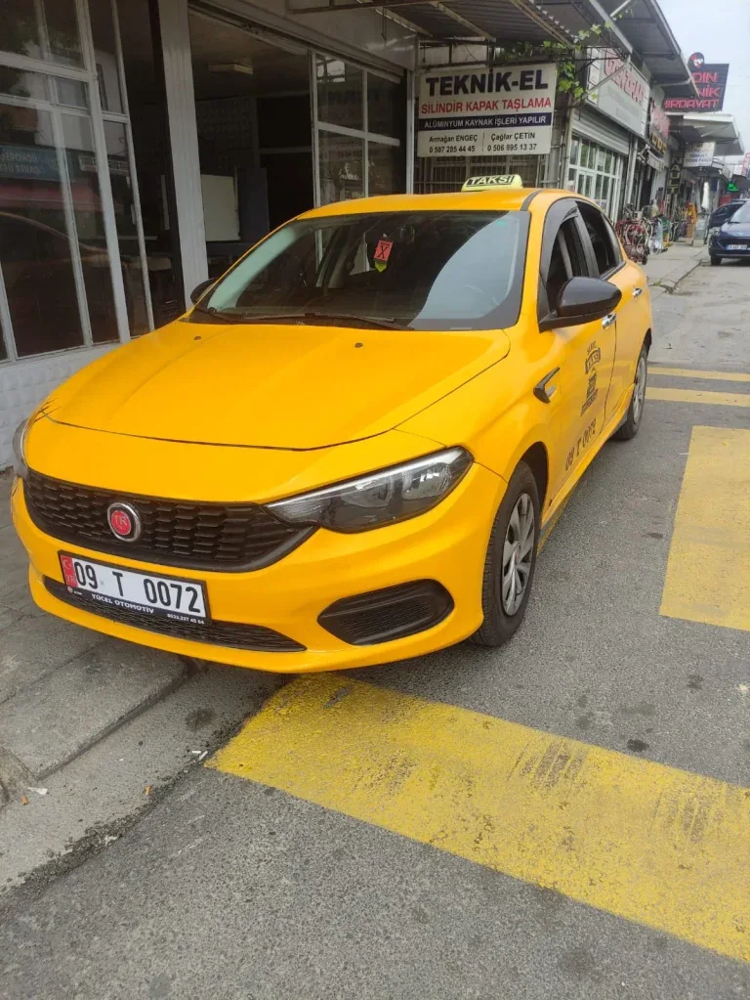
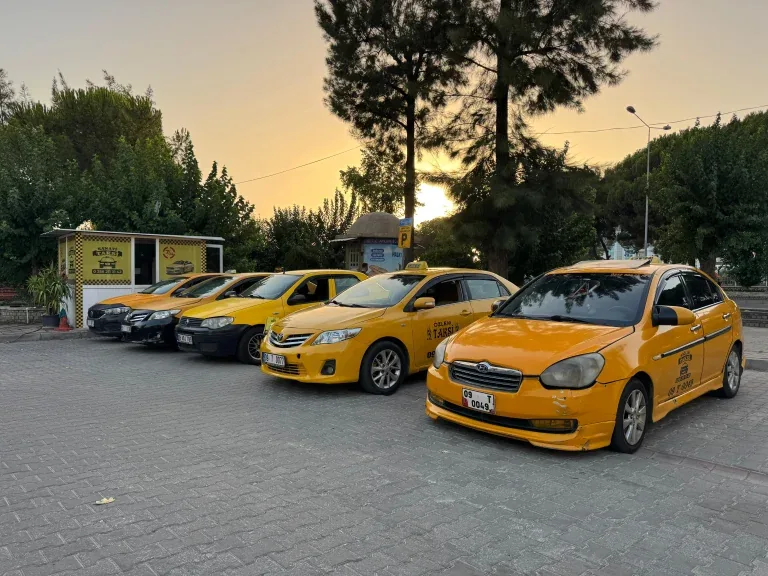
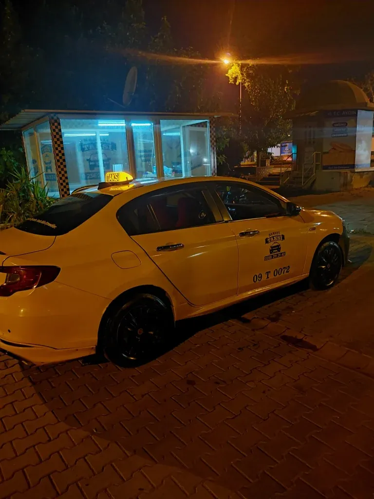

Aydın'da Güvenilir
7/24 Taksi Hizmeti
Adımızdaki 724, sözümüzün özeti: haftanın 7 günü, günün 24 saati kesintisiz hizmet. Şehir içi, hastane, havalimanı ve şehirlerarası her yolculuğunuz için deneyimli şoförlerimizle yanınızdayız.
Gece gündüz, her saat arayabilirsiniz
Deneyimli, güler yüzlü şoförler
Merkez ve tüm ilçelerde hizmet
Şeffaf, sabit tarifeli fiyatlandırma
İhtiyacınıza Uygun Taksi Hizmeti
Şehir içinden şehirlerarasına, her yolculuk türü için buradayız.
Şehir İçi Taksi
Aydın merkez ve tüm mahalleler için hızlı, güvenli şehir içi ulaşım.
Hastane / Sağlık Transferi
Randevu saatlerinize yetişmeniz için hızlı hastane transferi.
Havalimanı Transferi
Adnan Menderes Havalimanı'na önceden rezervasyonla zamanında transfer.
Şehirlerarası
Nazilli, Söke, Kuşadası ve çevre ilçelere konforlu şehirlerarası taksi.
Bagajlı / Uzun Yolculuk
Seyahat çantalarınız için geniş bagaj alanına sahip araçlarla konfor.
Önceden Rezervasyon
Telefon veya WhatsApp'tan önceden arayarak yolculuğunuzu planlayın.

Aydın'ın Güvenilir 7/24 Taksi Hizmeti
Aydın'ın her noktasına güvenli ve konforlu ulaşım sağlıyoruz. Deneyimli şoförlerimiz ve şeffaf ücretlendirme politikamızla, müşteri memnuniyetini her zaman ön planda tutuyoruz.
- Deneyimli ve güler yüzlü şoförler
- Şehir içi, hastane, havalimanı ve şehirlerarası hizmet
- Taksimetreli, şeffaf ücretlendirme
- 7/24 telefon ve WhatsApp'tan ulaşılabilir
Konfordan Ödün Vermeden, Güvenilir Hizmet
Aydın'ı ve güzergâhlarını iyi tanıyan bir ekiple, her yolculukta en doğru ve konforlu rotayı sunuyoruz.
Deneyimli Şoförler
Yılların tecrübesiyle güvenli sürüş.
Şeffaf Ücretlendirme
Taksimetreli, sürprizsiz fiyatlandırma.
Hızlı Yanıt
Aramanızdan kısa süre sonra kapınızda.

Araçlarımız ve Durağımız
Bizi Tercih Edenler Ne Diyor?
Aşağıdaki kartlar örnek/temsili yorumlardır — gerçek Google değerlendirmeleriniz yayınlandıkça bu bölümü onlarla güncelleyebilirsiniz.
"Gece geç saatte aradık, kısa sürede geldiler. Şoför çok nazikti, güvenli bir yolculuk oldu."
"Hastane randevusuna yetişmemiz gerekiyordu, tam zamanında geldiler. Kesinlikle tavsiye ederiz."
"Havalimanına transfer için kullandık, hem konforlu hem de fiyatı gayet uygundu."
Merak Edilenler
Aydın Taksi 724 7/24 mü hizmet veriyor?
Evet, adımızdaki 724 tam olarak bunu ifade ediyor — haftanın 7 günü, günün 24 saati kesintisiz hizmet veriyoruz.
Havalimanına taksi çağırabilir miyim?
Evet, Adnan Menderes Havalimanı ve şehirlerarası transferler için önceden rezervasyon yaparak taksi çağırabilirsiniz.
Hangi bölgelere hizmet veriyorsunuz?
Aydın merkez başta olmak üzere Efeler, Söke, Nazilli, Kuşadası, İncirliova ve çevresindeki ilçelere hizmet veriyoruz.
Ücretlendirme nasıl yapılıyor?
Tüm yolculuklarımız taksimetre ile, şeffaf ve sabit tarifeli şekilde ücretlendirilir; sürpriz ek ücret uygulanmaz.
Önceden rezervasyon yapabilir miyim?
Evet, telefon veya WhatsApp üzerinden arayarak yolculuğunuzu dilediğiniz saat için önceden planlayabilirsiniz.
Bize Ulaşın
Taksi talebiniz için formu doldurabilir ya da doğrudan arayabilirsiniz.